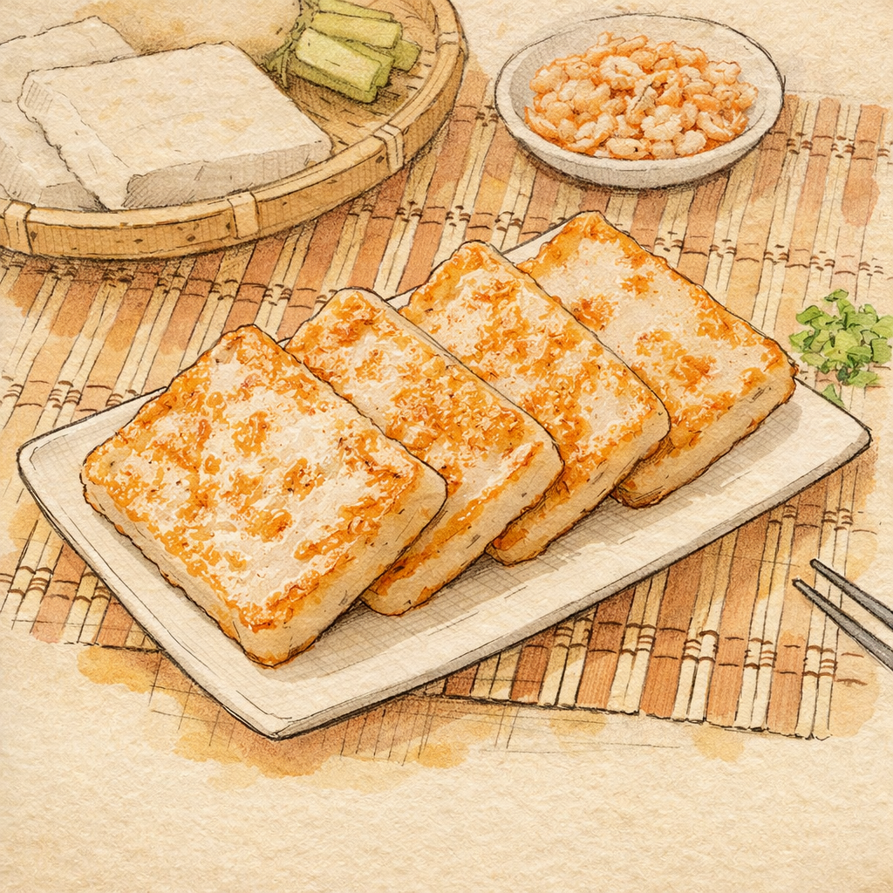

在開始閱讀之前，我們先來猜一個小問題：
Before reading, let's guess:
台灣哪一種傳統食物除了過年，平常早餐也常看到？
Which traditional Taiwanese food is commonly seen for breakfast on normal days, besides during the Lunar New Year?

Huiling: Martin, look, so many people are lining up at this shop to buy radish cake!
Martin: Wow, their radish cake must be very delicious! Should we buy a few pieces to try?
Huiling: Sure! Did you know? Radish cake is a traditional food Taiwanese people often eat during the Lunar New Year.
Martin: Why do Taiwanese people eat radish cake during the Lunar New Year?
Huiling: "Radish" in Taiwanese is called "tshài-thâu", which sounds like "good omen" (hǎo cǎi tóu), meaning good luck and smoothness in the new year.
Martin: So radish cake is an auspicious food! What is it made of?
Huiling: It's made with indica rice flour, white radish, dried shrimp, and dried shiitake mushrooms. It smells and tastes very fragrant.
(Eating while walking after buying)
Martin: The skin is a bit crispy, the inside is very soft, and the taste is just right. It's really delicious! It's my first time eating such a special food.
Huiling: We eat radish cake during the Lunar New Year, and we also eat it on normal days.
Martin: Then I have one more choice for my breakfast in the future!